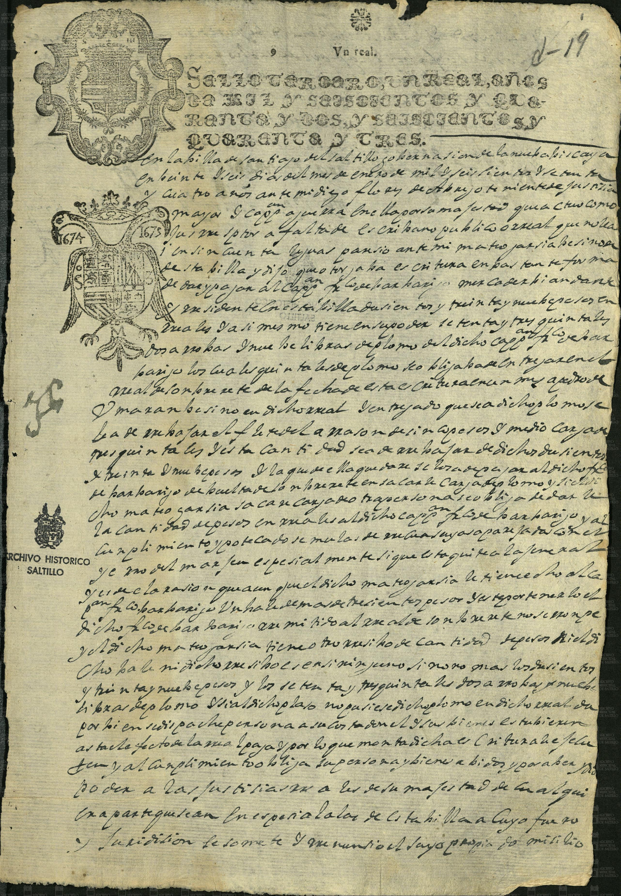
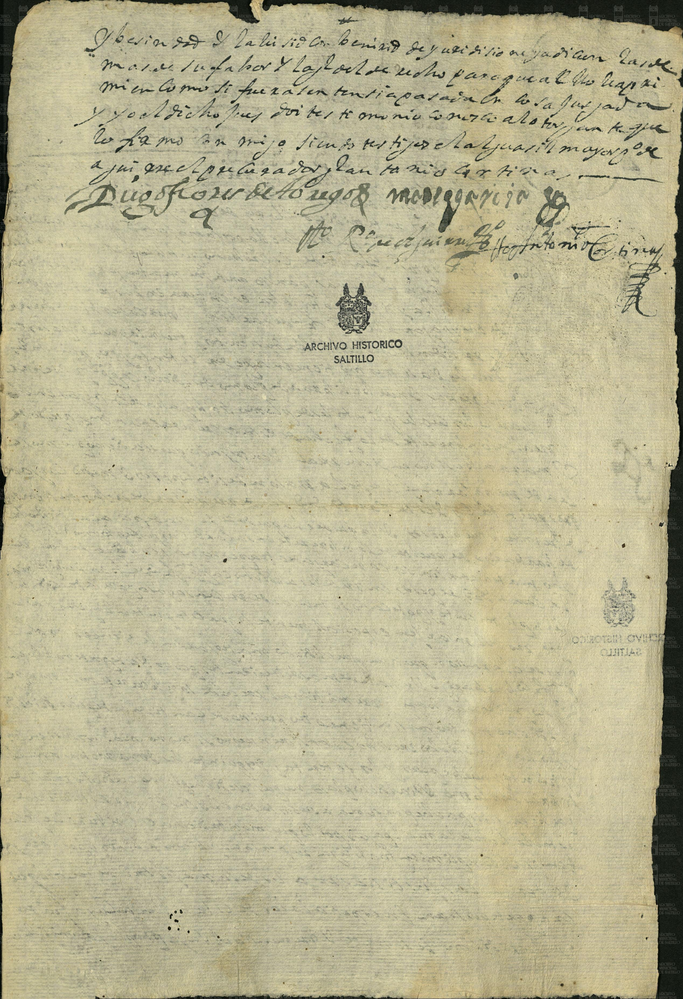

Mateo García


| Fondo | Presidencia Municipal (PM) |
| Firma AMS | AMS, PM, c 2, e 7, d 19, 1 f |
| Fecha | 26 de enero de 1674 (según la ficha del catálogo) |
| Descripción de la ficha del catálogo (tal cual) | Mateo García se obliga a pagar al capitán Francisco de Barbarigo 239 pesos en reales con los fletes de 73 quintales de plomo que le llevará a Sombrerete. |
| Id de ficha en el portal | 46173 |
| Personas indexadas en la ficha | Mateo García, Francisco de Barbarigo |
Transcripción pendiente. La imagen se publica con la descripción de la ficha del catálogo; no se ha leído línea por línea.
Imagen y ficha: Archivo Municipal de Saltillo, Sefarad MX. Fuente: Archivo Municipal de Saltillo, portal del archivo digital (Presidencia Municipal). Verificado y avalado por Sefarad MX · genealogiasefardi.site.